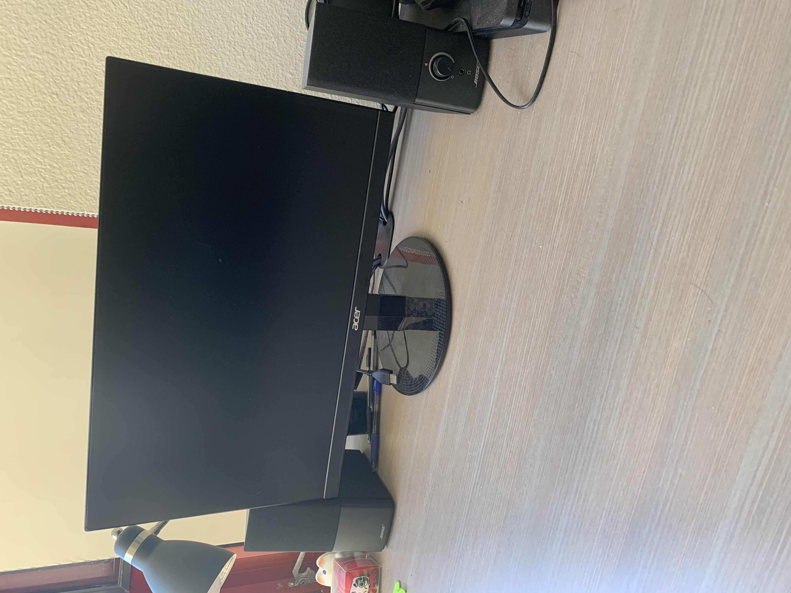

9:00 pm - 10:30 pm: CSE 101 homework group meeting
It's the start of week 2, and it almost feels like I'm already swamped in work. While the
work so far has not been too bad and I really enjoy my classes, I'm very apprehensive about
what will happen once they all start to ramp up at once. After attending my classes, and
grinding out some more of my homework for the week, I got to watch the NCAA Championship game
with my roommates. I was very happy to see Baylor win over Gonzaga because they knocked USC
out of the tournament! I spent the rest of the night after meeting with my homework group
for CSE 101 playing some League with my roommates and friends, and got my first pentakill :D.
I think Mondays will be more of a free day for me, where I get to choose what I need to work on
or what I want to do.
The speakers I got for my monitor also arrived a couple of days ago, and I finally got around to
setting them up. Here's a picture. I finally have a somewhat complete setup, whoo!

Robotics and Video Editing?
Date: Tuesday, April 6th, 2021
Today's Agenda:
9:30 am - 11:00 am: CSE 101 Lecture
4:00 pm - 5:30 pm: CSE 110 Lecture
Even though I have to wake up a little earlier this quarter on Tuesdays, I planned out
my schedule so I don't have have many classes on certain days of the week like today.
Because my day is lighter, I can actually go and do stuff outside of school that I want to do.
I've been trying to get more exercise in after essentially stopping completely since the pandemic
started. I swam competitively for 7 years, so not getting any exercise has made me kind of restless
during the day. I actually went on my first run in a long time around the Warren college area,
and I hope I can get into a bit of a routine as the quarter goes on.
What I've Learned After not Exercising for a Year
I am really out of shape
Don't try to run like over a mile after you haven't ran at all in forever. It huurrrtttss after.
I spent the rest of the night working on testing our aimbot software for Triton Robotics and gettin it up
and running. Here's a video I tried to put together of a video demonstration of the target
detection and tracking, but I do not understand how to properly video edit anything, so
I ended up with a very janky-looking video. Here's how it came out:
Despite thinking that my day would end up not being that busy, I still
ended up going to sleep at around 3 am T_T.
Lectures, Meetings, More Lectures, More Meetings
Wednesday, April 7th, 2021
Today's Agenda:
10:00 am - 11:00 am: CSE 135 Lecture
11:00 am - 12:00 pm: CSE 135 Discussion
12:00 pm 3:00 pm: CSE 110 Lab Work Time
4:00 pm - 5:00 pm: CSE 30 Staff Meeting
6:00 pm - 8:00 pm: CSE 30 Tutor Lab Hours
8:00 pm - 10:00 pm: Triton Robotics Lead Meeting
Just another very, very, very busy day for me today. I'm writing this
entry at the end of the day, and many am I exhausted. Despite being very busy every
Wednesday this quarter, I don't actually hate my Wednesdays (yet). I really enjoy all the
lectures that I have for the day, and have really been ejoying the lab activities in 110
as well.
I actually had my first tutor lab hours for the quarter today as a tutor for CSE 30. I
always look forward ot talking to other students and helping them figure out any conceptual
or programming issues they might be having. Even though I only got to talk to 2 students
today, I got to have really interesting conversations with each of them. One of them was
very interested in tutoring here for the university, so I talked to him about my experiences
as a tutor and what he could try to do to improve his application and also become a tutor.
One of the songs that I recently found that I have really been enjoying and helps me get
through long work days like this is Look at the Sky by Porter Robinson.
The music video for the song can be found here.
The vibe of the song and its energy give me the motivation to keep pushing through what I need to do.